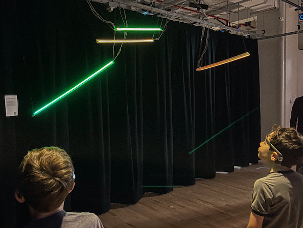
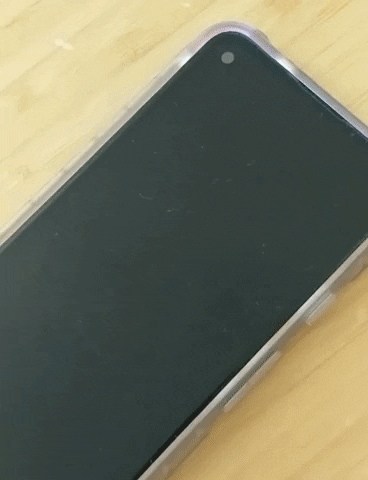

anna y lin
| projects |
|---|
| ⏲ professional work |
| ⇱ diaspora radicals, Taper #11 |
| ⇱ badwatercolor |
| ⇱ creative coding |
| workshop |
| ⇱ hacking with the browser |
about this website
the last time i completely changed my website was in 2018.
websites are always a work in progress; this change has been due for a long time--when my old website no longer reflected my thoughts and aesthetic as a person who both continues to work in, and have a love-hate relationship with technology.
if the old website described me as a person, it would paint this picture: someone getting into complex javascript libraries, server-side bundling, and a bit of a code-hoarder for fear of needing it later in the future.
i hope this new website is a better reflection of how i feel about websites now--they can be plain javascript + html, and they can be fun (!) because it leaves room for more important things--like accessiblity, maintenance, and room to grow.
my old website had ~406 MB of assets; this one has ~50 MB
eeg cloud
Twins using the EEG devices and controlling different sets of the lights in the EEG cloud, based on activity levels in their brain.
Why
Communication often fails us--mispronunciation, misinterpretation, other mishaps; we wanted to explore a different way of communicating our thoughts and feelings about a situation, using our brainwaves.
How
This project was created with Daniel Wai, and with a lot of advice on EEG devices and how to read its data from Jason Snell.
The EEG cloud consists of two sets of LED lights suspended in the air. Each pair of lights is connected to one of the two Muse 2 (EEG sensing device) devices. Participants are invited in pairs to put on one of the Muse 2 devices, which will record their brain activity. The EEG data is sent to the Arduino paired with the LED lights via WiFi, and the LED lights reflect a different color based on the state of the participants' mind.
Conclusion
This was an interesting exploration of what alternate forms of communication and expression could look like. When this project was presented as part of the ITP 2023 Spring Show (for the class Intangible Interactions by Yeseul Song), we received a lot of interesting ideas from people.
For example, what if we could have EEG-controlled lighting in our homes--a pre-anticipation of mood lighting? Or what if we use this as a trauma recovery therapeutic device, to guide us in our mental state on how we feel about a certain subject before we can verbalize it by allowing us to express it in a gentler, passive way?
Read more about it here.ai loves horror
A horror text-based adventure game made using OpenAI's GPT-3 (Davinci model) API. This project was shown during the ITP Winter Show, 2022.
Why
It's an homage to old-school text based adventure games, and an exploration of AI's ability to write an emotionally compelling story for the player.
How
The app sends a prompt to Davinci to write a text-based adventure game that will give players choices numbered 1-3. When a choice is made, it is added back to the entire story and sent as a prompt to Davinci to send more choices, until the story is finished.
The story changes every time it is run, and it is generated live during gameplay. Ony Davinci has control over the choices and when to end the game.
The pace of the text also increases the longer the player plays.
Conclusion
It's interesting how Davinci is able to create a cohesive story that follows the theme of a horror adventure game. The stories Davinci generates usually consists of one spooky figure in a strange place, and the player is given choices to confront the figure or run away.
Somehow, the story always ends in about 5 minutes or so, and Davinci almost always gives a somewhat optimistic ending.
Read more about it here.text me smth nice
A messaging app that uses the Twilio SMS API to send out nice texts periodically.
Why
During the pandemic, i wanted to remind my friends and myself that there are brighter times ahead.
How
I created a Python app that runs on a scheduler to use the Twilio SMS API, sending a text to subscribed numbers during random times of throughout the day.
Conclusion
Texting seems to be a pretty non-intrusive way of reaching out to people that can be made into a positive experience.
It made me happy to hear from a friend that the random texts throughout the day did help them through a tough time.
Read more about it here.baby killer

Squishy Sounds (AKA baby killer as our friends called it) was a collaborative project with Efrat Levy, to make playing music a sensory experience.
Why
We wanted to reimagine what musical peripherals could be like if we experiemented with color, shape and material.
How
We created pastel-colored shapes using molded silicon and connected them to wires to use as a capacitive sensor. Then we added sounds to it via serial communication from an Arduino to p5.
Conclusion
While possible, it was difficult to control the sensitivity of the silicon as sensors. The silicon is delightful to play with but in the future i would explore different sensory materials.
Read more about it here.spotify recently added

Generate a playlist of your top most recently added songs in your Spotify library.
Why
Growing up using Apple Music, i enjoyed the auto-generated top 20 songs playlist--a feature that i miss since using Spotify.
How
I found out that closest i could get to creating an auto-generated top 20 songs playlist was to use the Spotify API to get a list of all my tracks, sorted in the order they were added, and send the latest 20 to the playlist creation endpoint.
It took some time figuring out the authentication, and while it was a hassle, it works pretty well once you authenticate and get redirected to the app.
Conclusion
There's not much customization you could do with generating playlists this way--for example, it would have been fun to play around with making an auto-generated playlist cover image as well.
Read more about it here.tableware zine


reveries
DALL·E art, curated in collaboration with Michelle Ma & YiChun Lan
reveries


badwatercolor

filmotography
Yosemite


Alaska


East Coast


| about |
|---|
| hi, i'm anna y lin |
| i am a creative technologist currently pursuing a masters at NYU ITP |
| before that, i created user interfaces to help people access data at MITRE and Schwab as a UX engineer in the realms of cybersecurity, policy, finance, and briefly in data-vis with the wonderful people at Stamen Design |
| this fall, i'm working on: 100 days of websites |
| besides making things on the internet i also like to make things with my hands and read |
| say hi at al7215(@)nyu.edu |
| you can find my resume here |
| you can find a photo of me here |
| github, instagram, twitter |